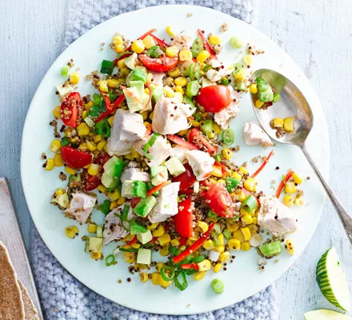
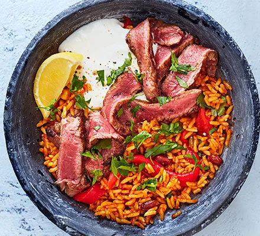
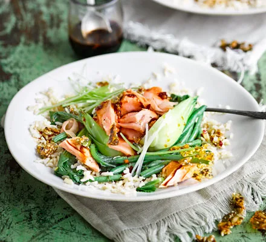
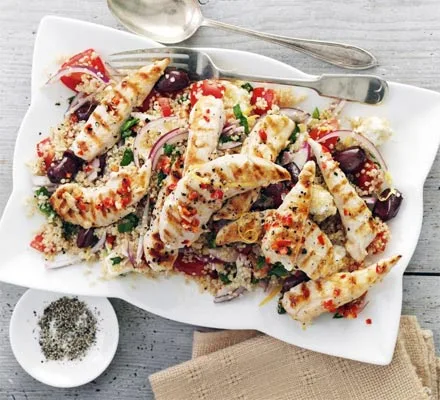
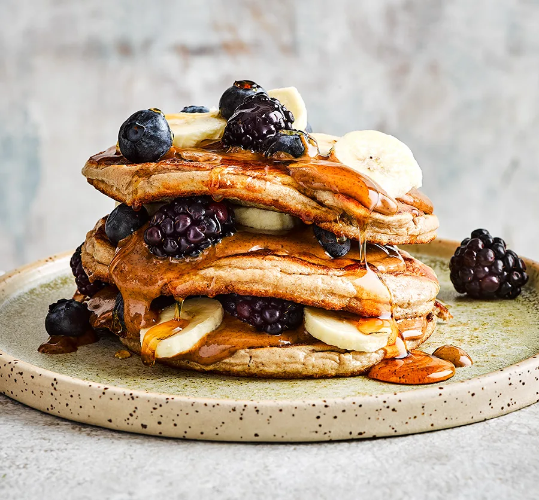
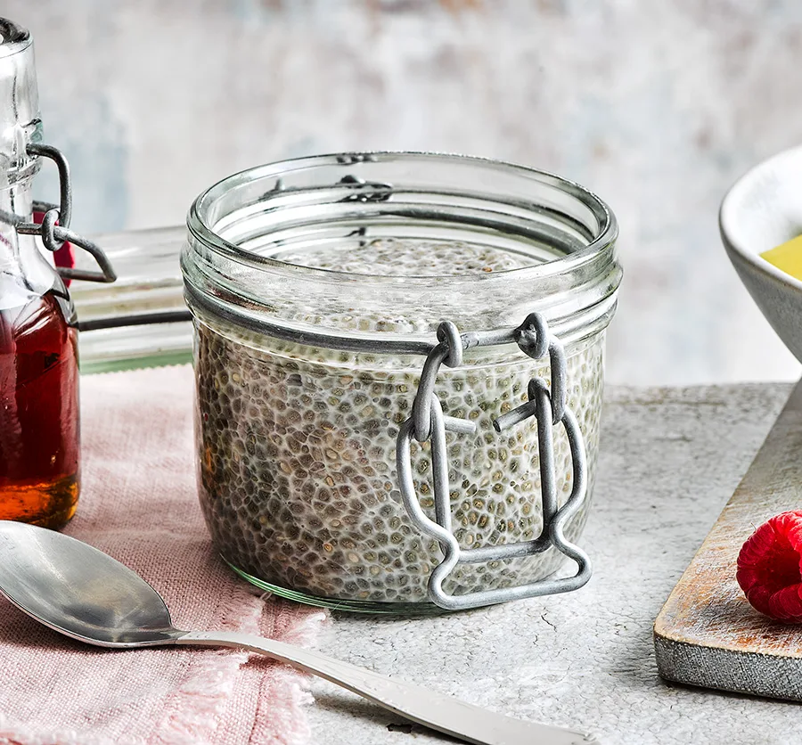

Down below you can see both salty and sweet recipes that are low in calories, high in protein and taste absolutely fantastic! Cheers
Avocado salad lovers, this one's for you!
DID SOMEONE SAY BURRITO?!?!?
Packed with protein AND Omega-3 acid :)
Another chicken salad??? It's good. Try it.
Enough with the salty stuff, now onto the stuff you're really interested in...
Easily one of the most delicious desserts you can think of...enough said.
Sweet, healthy, exotic...what else do you need?
